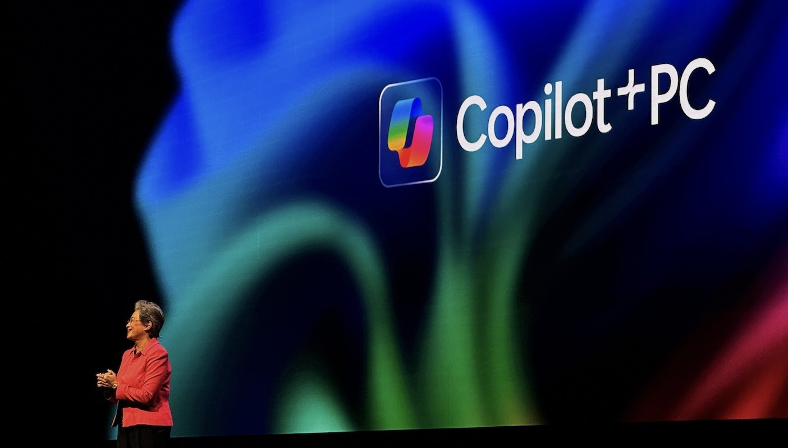
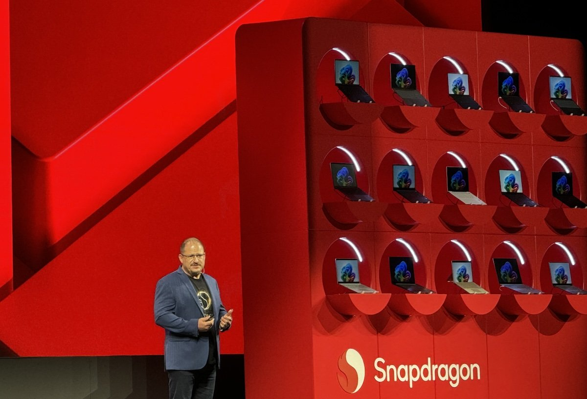
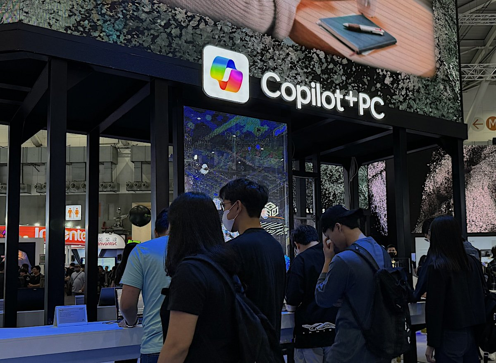

O seu PC nunca mais será o mesmo e, agora, estamos vendo o “renascimento da computação”. As gigantes da tecnologia dizem que a forma como usamos nossos computadores vai mudar, e tudo isso por causa da inteligência artificial (IA).
Desde a explosão do ChatGPT, lançado em novembro de 2022, o mercado tem se movimentado rapidamente para acompanhar não só os avanços da tecnologia, mas também para entregar recursos que o público quer ter em mãos.
Três gigantes da indústria de computadores trouxeram novidades na Computex: a Intel afirmou que vai liderar a corrida em CPU, GPU e IA; a AMD destacou que possui o chip mobile mais poderoso do mundo; enquanto a Qualcomm foi categórica ao dizer que seu chipset é o líder indiscutível.
Todas elas estão certas, de alguma forma. Respectivamente, os novos processadores Lunar Lake, Ryzen AI 300 e Snapdragon X Elite representam um avanço significativo no mercado. Mas, também, todas essas empresas são enfáticas ao afirmar que o jeito que você usa o seu computador vai mudar, seja para uso pessoal ou trabalho, e que isso não tem mais volta.
A Computex 2024 nos conta o seguinte: a inteligência artificial será cada vez mais incorporada aos computadores, sejam notebooks ou desktops. Antes do início da feira, a Intel realizou o seu evento Intel Tech Tour para apresentar a linha de processadores x86 Lunar Lake com 120 TOPs (Trilhões de Operações por Segundo) no total: 67 de GPU, 48 de NPU e 5 de CPU.

A nova geração representa um salto significativo em comparação com a anterior, a Meteor Lake. O Lunar Lake tem oito núcleos, sendo quatro de eficiência e quatro de performance, até 32 GB de memória RAM integrada e promete consumir 40% menos energia. Em GPU o salto é de 80%, segundo a Intel, fazendo com que jogos sejam uma realidade em notebooks finos e sem GPU dedicada.
Mas, assim como as concorrentes, a Intel foca em pontos específicos para o Lunar Lake: alto desempenho, eficiência energética e NPU poderosa. Segundo Michelle Johnston, vice-presidente e gerente geral da Intel, a empresa vencerá em performance, gráficos e IA com a nova geração.
Com o Ryzen AI 300, também chamado de Strix, a AMD promete algumas coisas similares, como alto desempenho consumindo menos energia em notebooks. Mas há um detalhe: a NPU do chip possui 50 TOPS para atividades de IA, com arquitetura de CPU Zen 5 de até 12 núcleos e gráficos integrados com base na tecnologia RDNA 3.5.
Comparando com o Snapdragon X Elite, a AMD afirma que a sua nova linha de processadores é 60% melhor em gráficos, 30% melhor em multitarefa, 10% melhor em produtividade e 5% melhor em responsividade, utilizando testes de benchmark como exemplos. Em jogos, a empresa compara com o Intel Core Ultra 185H e diz que, no geral, o seu processador Ryzen AI 9 HX 370 tem performance 36% melhor.
Já o Qualcomm Snapdragon X Elite não é exatamente novo. Ele foi apresentado em outubro de 2023 com 12 núcleos e GPU Adreno, prometendo um alto nível de poder e gráficos avançados, assim como os concorrentes, consumindo pouca energia. Mas vamos nos atentar a um detalhe: o X Elite possui 45 TOPS, menos que a concorrência em quantidade.
Enquanto o AMD Ryzen AI 300 lidera com 50 TOPS na NPU, o Intel Lunar Lake segue de perto com 48 TOPS, e o Snapdragon X Elite da Qualcomm oferece 45 TOPS, refletindo a intensa competição entre os fabricantes de chips para fornecer soluções cada vez mais potentes em inteligência artificial.
Cristiano Amon, CEO da Qualcomm, cita que isso não é um problema. Segundo ele, a plataforma da empresa tem melhor desempenho por watt e que isso é o mais importante.
"Portanto, embora o X Elite seja o novo líder de desempenho no ecossistema Windows, esse não é exatamente o nosso trabalho. Nosso trabalho é trazer liderança geral para o ecossistema Windows no Copilot+ PC. Portanto, o X Elite é o novo líder de desempenho e ponto", disse Amon em sua apresentação na Computex.
O executivo ainda afirma que a Qualcomm está em "uma posição incrível", já que as principais concorrentes têm utilizado os chipsets da empresa como parâmetro em comparações de benchmarking.
Ele compara o Snapdragon X Elite com o Intel Core Ultra 7 155H e com o Apple M3 em um teste de estresse, afirmando que o processador da Qualcomm tem uma performance por watt 5,4x melhor e 2,6x melhor, respectivamente.
A Microsoft apareceu em todas as principais apresentações da Computex 2024. Intel, AMD e Qualcomm são parceiras da empresa no novo segmento Copilot+ PCs, que são essencialmente computadores com inteligência artificial e NPU dedicada. Tanto a empresa quanto o próprio Windows são diretamente beneficiados pela iniciativa.
Dezenas de fabricantes já estão trabalhando em produtos compatíveis com o Copilot+, e não apenas de notebooks. Companhias de hardware já vêm demonstrando suas placas-mãe, GPUs, memórias e outros componentes focados em IA, que devem estrear nos próximos meses.
Lisa Su, CEO da AMD, diz que a empresa tem liderado a transição para os PCs com IA desde o lançamento da primeira geração do Ryzen AI em janeiro de 2023. "Agora, a IA está realmente revolucionando a forma como interagimos com os PCs. Ela permite experiências mais inteligentes e personalizadas que tornarão o PC uma parte ainda mais essencial de nossas vidas”, disse.
Já Amon ressalta que "o PC realmente renasceu" e que essa "nova era" está acontecendo pela combinação do Snapdragon X Elite com o Copilot+. "O Snapdragon X Series e o Copilot+ representam uma das mais significativas transições do Windows. Pessoalmente, acredito que tão significativa quanto o Windows 95. Isso está mudando a experiência e fornecendo recursos inovadores de IA que fundamentalmente transformam como nós interagimos com os nossos PCs", afirma o executivo.
Já Pat Gelsinger, CEO da Intel, afirma que todas as empresas "serão empresas de IA no futuro". Ele também cita: "A lei de Moore não está morta. Ela está viva, e muito bem". Sobre a entrada da Qualcomm no mercado, ele dá as boas-vindas à empresa, mas diz que a Intel está confiante com a sua nova linha de produtos. Além disso, o executivo afirma que todas as empresas precisam ter responsabilidade sobre como devem explorar o uso da IA.
Os primeiros computadores com Copilot+ PC devem estrear no mercado já nos próximos meses. Um requisito básico para todos, no entanto, é trazer ao menos, 40 TOPS de NPU. Ou seja, apesar de termos a tecnologia de IA puxando essa evolução nos PCs (e em outros dispositivos, é claro), a Microsoft é uma peça central em toda essa nova geração.
Todas as grandes empresas de tecnologia que vimos na Computex 2024 falaram que a IA vai mudar totalmente a forma como usamos nossos PCs. Até vimos alguns exemplos utópicos sendo apresentados, de assistentes virtuais parecidas com as da ficção científica. Mas isso, é claro, traz a questão: o que fazer com os PCs sem NPU?
Em conversa com executivos, ouvi que essa transformação não vai extinguir os computadores sem NPU dedicada, mas que a demanda por eles será maior. Mas, também, há um fato relevante e cada vez mais nítido: essa transformação vem sendo vista com grandes olhos pelas empresas de tecnologia.
Para Carlos Cordeiro, CTO da Intel, a chegada da IA será tão revolucionária quanto a chegada do Wi-Fi aos computadores. Ele cita que a tecnologia vai nos tornar muito mais produtivos. "É uma transformação similar à do Centrino [plataforma da Intel]", diz. Segundo ele, o salto para IA vai ser igual "e com o tempo até maior [à chegada do Wi-Fi]", mas que tudo também depende do consumidor.
"Se você está precisando de um computador agora, você não vai poder esperar. Agora, se for uma questão de esperar seis meses, o consumidor vai esperar. É uma questão financeira, da necessidade. Mas, vou te dizer, o computador com inteligência artificial vai mudar tudo", afirma Cordeiro.
Já David McAfee, vice-presidente corporativo da AMD, conta que existem diferentes pessoas que buscam por diferentes PCs, e também por muitas razões. Ele ressalta que o valor dos computadores também é outro fator a ser levado em consideração, mas que, se você está ansioso para usar a tecnologia, deveria sim esperar mais um pouquinho.
Em uma conversa antes da feira, Luciano Beraldo, gerente sênior da área de notebooks da Samsung Brasil, me contou que a NPU traz vantagens no processamento de dados paralelos de IA, consumindo menos energia. Mas que, "nesta primeira onda, a NPU estará presente apenas nos modelos top de linha", ou seja, os mais caros. Beraldo ainda me disse que não ter uma NPU não faz com que um notebook não possa rodar aplicações de IA.
Ou seja, o principal ponto aqui é que os novos PCs com IA devem estar cada vez mais presentes no mercado e também na mão dos consumidores. Mas essa nova onda da tecnologia não deve ser preocupante desse ponto de vista.
Se o seu computador não tem IA, dificilmente isso se tornará um grande problema. Nem as fabricantes, muito menos a Microsoft, podem tornar produtos que foram lançados em 2024, por exemplo, obsoletos já no mesmo ano. Tampouco os modelos de anos anteriores, já que computadores não são tão simples de serem trocados quanto celulares.
Mas uma coisa é certa, todo mundo está apostando suas fichas em PCs com IA e ainda vamos ouvir falar muito sobre a tecnologia.
Notícia original: https://www.tecmundo.com.br/produto/284866-vai-mudar-tudo-chegada-de-ia-pcs-tao-importante-wi-fi-dizem-gigantes-tecnologia.htm